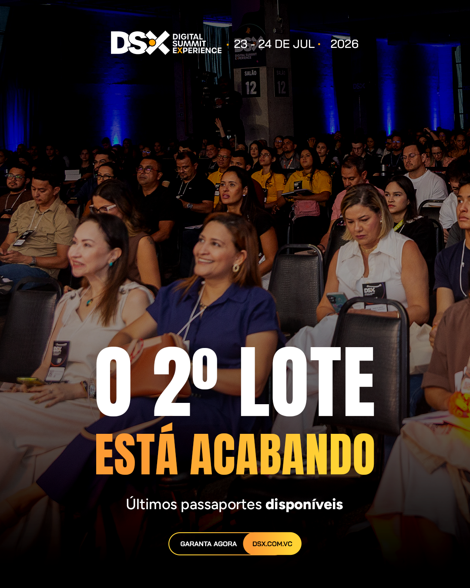

01
Resultados Consolidados — Março 2026
Invest. em Venda
R$ 10.474
31 dias · exclui LEADS
Pedidos Pagos
28
Meta Gerenciador
Faturamento
R$ 20.692
via tráfego pago
Cálculo do CAC: campanhas de VENDA apenas (ALL FUNNEL + FUNDO + TOPO View + MEIO LP). A campanha de LEADS Form+LP (R$ 3.524) é tratada separadamente porque seu papel é gerar leads pro comercial, não purchase direto.
O CAC de R$ 374 fica acima do target 2026 (R$ 85-95) — esperado em março, fase inicial da campanha (145 dias de corrida). O padrão histórico DSX/Manaus é compra tardia: 50%+ dos ingressos saem nas últimas 2 semanas. O que importa em março é mapear a fórmula vencedora e preparar criativos pro pico junho/julho.
02
Resultados por Campanha
CAMPANHAS DE VENDA
| Campanha |
Spend |
Impressões |
Pedidos |
CAC |
Faturamento |
ROAS |
| [ON] [ALL FUNNEL] [VENDAS] Compras |
R$ 6.204 |
354.466 |
20 |
R$ 310 |
R$ 14.204 |
2,29x |
| [ON] [FUNDO] [VENDAS] Compras |
R$ 1.340 |
86.837 |
8 |
R$ 167 |
R$ 6.488 |
4,84x |
| [OFF] [TOPO] [VENDAS] View Content |
R$ 1.702 |
277.197 |
0 |
— |
— |
— |
| [OFF] [MEIO] [VENDAS] Landing Page |
R$ 1.228 |
125.367 |
0 |
— |
— |
— |
| TOTAL VENDA |
R$ 10.474 |
843.867 |
28 |
R$ 374 |
R$ 20.692 |
1,98x |
CAMPANHA DE GERAÇÃO DE LEADS (métrica principal é lead, não purchase — avaliada pelo CPL)
| Campanha |
Spend |
Impressões |
Leads |
CPL |
Papel |
| [ON] [TOPO & MEIO] [LEADS] Form + LP |
R$ 3.524 |
210.709 |
580 |
R$ 6,08 |
Abastece comercial |
As duas campanhas de venda destacadas (ALL FUNNEL + FUNDO Compras) concentram 100% dos pedidos diretos. As TOPO View Content e MEIO Landing Page alimentaram o Pixel com 5.593 LPVs que as campanhas de fundo consumiram via remarketing/Advantage+ — têm papel estrutural no funil, não conversor direto.
A LEADS Form+LP é avaliada separadamente: entregou 580 leads ao comercial a CPL R$ 6,08 — valor abaixo do target do segmento (R$ 15-25). O comercial trabalha esses leads no WhatsApp; conversões daí aparecem como venda orgânica/direta, não no CAC de tráfego pago.
03
Criativos que Performaram — 17 ads com venda
Os 17 ads que geraram venda agrupam-se em 4 categorias com papéis distintos no funil.
Categoria A
CARDs FUNDO · urgência e lote
Motor de conversão · 8 ads · ROAS médio 4-8x
AD 26 — "Garanta seu lugar no maior evento do Norte" CARD
ALL FUNNEL · Mensagem direta de fechamento com positioning regional
Invest.R$ 930
Pedidos4
CACR$ 233
ROAS3,73x
Faturam.R$ 3.473
Por que funciona: mensagem direta "garanta seu lugar" + positioning "maior evento do Norte" + rosto de participante real do DSX 2025 na thumbnail (prova social implícita). É o único ad com 4 vendas no mês — maior volume de todos. ROAS 3,73x com CAC R$ 233 validam a fórmula como motor da campanha.
AD 51 — "Alta procura no 2º lote" CARD
ALL FUNNEL · Prova social de demanda
Invest.R$ 156
Pedidos1
CACR$ 156
ROAS8,33x
Faturam.R$ 1.297
Por que funciona: "Alta procura" é gatilho de escassez social — sinaliza que outros estão comprando e o lote está escoando. CPM R$ 14 comprova público quente. Replicável em qualquer virada de lote sem citar número específico.
AD 17 — "[27/03] Última chance de garantir seu passaporte" CARD
FUNDO Compras · Urgência temporal nominal
Invest.R$ 52
Pedidos1
CACR$ 52
ROAS15,23x
Faturam.R$ 794
Por que funciona: "Última chance" é o gatilho de urgência mais forte — empurra quem estava adiando. CPM R$ 12 (menor da conta) + CAC R$ 52 é a eficiência máxima vista em março. Padrão universal pra fim de qualquer janela promocional.
 ROAS 7,04x
ROAS 7,04x
AD 15 — "Compre antes do próximo lote" CARD
FUNDO Compras · Antecipação de virada de preço
Invest.R$ 113
Pedidos1
CACR$ 113
ROAS7,04x
Faturam.R$ 794
Por que funciona: a palavra "antes" é o gatilho — racionaliza a decisão ("vou economizar"). Não cita qual lote, então é reaproveitável em toda virada. ROAS 7x com CPM R$ 13 é de manual.
AD 54 — "2º Lote Aberto" CARD
ALL FUNNEL · Abertura de nova janela
Invest.R$ 86
Pedidos1
CACR$ 86
ROAS4,60x
Faturam.R$ 397
Por que funciona: sinalização de transição de preço — pega quem estava observando e decide agora. Atenção pró-próxima rodada: esse ad ficou descartável quando abriu o 3º lote. Substituir sempre por gatilho genérico ("Novo lote em vigor").
AD 34 — "O lote promocional acabou. Mas a oportunidade..." CARD
ALL FUNNEL · FOMO pós-virada
Invest.R$ 74
Pedidos1
CACR$ 74
ROAS4,01x
Faturam.R$ 297
Por que funciona: o FOMO pós-virada ("você perdeu, mas ainda dá tempo") captura quem viu o lote encerrar e agora entende que preço só sobe. CTR 1,02% e ROAS 4x com baixíssimo spend.
AD 53 — "Compre antes do próximo lote" CARD
ALL FUNNEL · Mesma linha AD 15, mais budget
Invest.R$ 489
Pedidos2
CACR$ 245
ROAS1,62x
Faturam.R$ 794
Por que funciona: mesma linha do AD 15 mas com budget 4x maior. ROAS caiu (1,62x) — indica que a mensagem tem teto de escala. Melhor rodar 3-4 variações da mesma ideia pequenas do que 1 grande.

Combo escassez
AD 72 — "[30/03] O 2º lote está acabando" CARD
ALL FUNNEL · Escassez + data explícita
Invest.R$ 200
Pedidos1
CACR$ 200
ROAS1,98x
Faturam.R$ 397
Por que funciona: escassez explícita com data no próprio nome do ad (usado como fallback pra reporting). CTR 0,99% acima da média do mês.
Categoria B
CARDs TOPO · posicionamento + lote
Abertura de escala · 4 ads · ROAS até 15,76x
AD 07 — "DSX está de volta — lote promocional" CARD
ALL FUNNEL · Anúncio de abertura de lote
Invest.R$ 190
Pedidos1
CACR$ 190
ROAS15,76x
Faturam.R$ 2.991
Por que funciona: anúncio de "volta do evento" + oferta promocional fisga o público que esperava voltar pro DSX depois de 2025. ROAS 15,76x em R$ 190 é o maior da conta — a pessoa que comprou era de alta intenção. Foto de palco em composição DSX clássica (preto + laranja).
AD 03 — "Empreendedorismo, Marketing e Vendas" CARD
FUNDO Compras · Promessa temática direta
Invest.R$ 145
Pedidos2
CACR$ 72
ROAS9,68x
Faturam.R$ 1.399
Por que funciona: 3 palavras-promessa que definem o evento em 1 segundo — empreendedorismo, marketing, vendas. CAC R$ 72 (abaixo do target 2026 de R$ 85-95) em ambas as vendas. Ticket médio altíssimo (R$ 699).
AD 02 — "O Maior Encontro de Empresários do Norte" CARD
FUNDO Compras · Positioning regional para empresários
Invest.R$ 230
Pedidos1
CACR$ 230
ROAS6,14x
Faturam.R$ 1.411
Por que funciona: fala direto pra ICP-alvo (empresários) + exclusividade regional (Norte). Pega quem se identifica como "dono de negócio de verdade". Ticket médio R$ 1.411 — converteu em lote superior.
AD 13 — "O maior encontro de negócios do Norte" CARD
LEADS Form+LP · Mesma linha do AD 02 em volume
Invest.R$ 830
Pedidos1
CACR$ 830
ROAS0,96x
Faturam.R$ 794
Por que funciona (como Lead Gen): esse ad rodou na campanha de LEADS — a entrega dele é captar lead pro comercial, não compra direta. 1 purchase foi bônus. Como gerador de leads no topo/meio, funciona bem (CTR 1,18%).
Categoria C
REELS TOPO · visual sem fala
Awareness + venda magra · 3 ads · CTR 1,1-1,6%
Maior spend
AD 06 — "sem fala · em 23 e 24 de julho de 2026" REELS
ALL FUNNEL · Cenas do evento 2025 + data sobreposta
Invest.R$ 1.539
Pedidos2
CACR$ 770
ROAS0,77x
Faturam.R$ 1.188
Por que funciona: esse é o reel que o Andrômeda mais distribuiu budget do mês (R$ 1.539). CTR 1,49% acima da média. Converteu direto em 2 pedidos — mas o papel real foi alimentar a campanha toda: grande parte do aprendizado do Pixel veio dele. Não pausar olhando só ROAS direto.
AD 32 — "Apresentação drone DSX" REELS
ALL FUNNEL · Plano aéreo do evento 2025
Invest.R$ 76
Pedidos1
CACR$ 76
ROAS3,88x
Faturam.R$ 297
Por que funciona: CTR 1,62% — melhor hook entre reels topo. Plano aéreo transmite tamanho/credibilidade do evento sem precisar de fala. Referência visual pra próximos criativos.
AD 05 — "sem fala · 1º lote promocional" REELS
ALL FUNNEL · Cenas do evento 2025 + menção de lote
Invest.R$ 119
Pedidos1
CACR$ 119
ROAS2,49x
Faturam.R$ 297
Por que funciona: mesmo formato do AD 06 com menção ao 1º lote promocional. CTR 1,12% + conversão em pequeno spend. Atenção: citação de "1º lote" ficou descartável quando virou o 2º. Próximas versões devem usar gatilho universal.
Categoria D
REELS MEIO · prova social / depoimento
Aquecimento convertedor · 2 ads · CTR mais alto do mês
AD 33 — "Prova social · depoimento" REELS
ALL FUNNEL · Participante 2025 em closeup falando
Invest.R$ 469
Pedidos2
CACR$ 235
ROAS3,59x
Faturam.R$ 1.685
Por que funciona: CTR 2,16% — maior do mês. Prova social humana (pessoa real, closeup, sem produção) tem gancho mais forte que qualquer card. Funciona no MEIO porque quem viu o evento no TOPO quer ouvir "alguém como eu esteve lá". Ticket R$ 843.
AD 23 — "Prova Social · AC Display" REELS
LEADS Form+LP · Outro participante em depoimento curto
Invest.R$ 90
Pedidos1
CACR$ 90
ROAS3,30x
Faturam.R$ 297
Por que funciona: mesma fórmula do AD 33 mas na campanha de LEADS. Confirma que o formato depoimento funciona independente do objetivo da campanha. CAC R$ 90 (bate o target 2026).
04
Padrões Identificados — O que converteu em março
Analisando os 17 vencedores lado a lado, 4 padrões se repetem:
PADRÃO 1
Urgência nominal em CARDs FUNDO multiplica ROAS
CARDs com palavra-chave de escassez ("Alta procura", "Última chance", "Lote acabando", "Compre antes") geraram ROAS 4-15x com CAC R$ 52-245. 8 dos 17 ads com venda estão nessa categoria. Gatilho universal — deve ser reaproveitável em qualquer virada.
PADRÃO 2
Positioning regional forte vale ouro no TOPO
"Maior evento de negócios do Norte" / "Maior encontro de empresários do Norte" / "DSX está de volta" — ROAS explosivos (6-15x) quando o ad pega. A combinação positioning + lote promocional fisga o público que esperava voltar pro evento.
PADRÃO 3
Prova social humana tem o maior CTR do mês
AD 33 (depoimento) fechou CTR 2,16%, maior de todo o mês. Formato simples: participante 2025, closeup, sem produção, celular. Fala autêntica bate qualquer motion/drone. Escalar o formato com 3-4 outros participantes.
PADRÃO 4
Identidade visual DSX é consistente
Todos os vencedores seguem a mesma linha: fundo preto, palavra-chave em laranja, logo DSX no topo, data 23-24 JUL, CTA dsx.com.vc no rodapé. Com 1 segundo olhando, sabe que é DSX. Não quebrar esse padrão — o custo do reconhecimento é maior que o ganho de criatividade.
05
Briefing para o Time Criativo
Com base na fórmula vencedora de março, três frentes pra escalar nos próximos meses até o pico junho/julho:
01
Produzir 3-4 CARDs FUNDO com urgência universal
Categoria com maior ROAS — replicar o padrão vencedor
Os CARDs FUNDO são o motor. Produzir variações sobre a mesma linha visual dos vencedores:
- "70% vendido — garanta o seu"
- "Alta procura — últimos passaportes disponíveis"
- "Preço sobe em breve"
- "Última chance antes do próximo lote"
Regra: gatilhos de escassez genéricos (não mencionar número do lote). Quando vira o lote, o ad que diz "2º lote acabando" vira mentira — precisa pausar e recriar do zero. Mensagem universal sobrevive qualquer virada.
02
Escalar o formato REELS depoimento (maior CTR do mês)
AD 33 confirmou que prova social humana é o melhor gancho
Gravar 3-4 depoimentos novos de participantes do DSX 2025 no mesmo formato do AD 33:
- Closeup — só o rosto, boca até os ombros
- Celular, luz ambiente, sem estúdio
- 45-60 segundos, 1 frase forte sobre o evento + 1 emoção pessoal
- Lettering sóbrio com nome + cargo/empresa nos primeiros 3 segundos
Priorizar participantes que viraram clientes ou parceiros da Digital — autoridade reconhecida em Manaus. Evitar produção pesada: o algoritmo premia quem parece "recado pessoal", não "comercial de TV".
03
O que evitar na próxima rodada
Padrões que NÃO aparecem nos vencedores de março
- CARDs MEIO institucionais/conceituais — em março, 0 ads com venda vieram dessa categoria. O público não está no DSX pra filosofar, está pra comprar passaporte.
- CARDs TOPO puramente de posicionamento sem oferta — quando tem a "cola" de lote promocional (AD 07), ROAS 15x. Sem a cola, não converte.
- REELS com fala longa de produção/narrador — funcionou "sem fala" (AD 05, AD 06, AD 32). Os 3 primeiros segundos têm que prender visualmente.
- Messaging específica de lote no corpo do criativo — sempre vira descartável. Mesmo os vencedores que mencionaram lote (AD 51, AD 54, AD 72) morreram na virada. Preservar o aprendizado usando gatilhos genéricos.
Janela pra produção: março e abril foram consolidação. Junho e julho concentram 62% da verba (R$ 93k dos R$ 150k totais). Cada criativo novo no ar até maio dá tempo pro Andrômeda aprender antes do pico. Em eventos de ticket alto, 50%+ das vendas saem nas últimas 2 semanas.